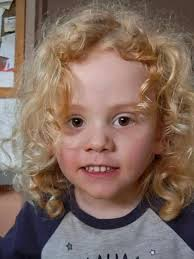

Taskforce launched as search for Gus Lamont expands in South Australia's north
2025, October 14

Taskforce launched as search for Gus Lamont expands in South Australia's north
2025, October 14
Australia
Police have launched a taskforce to search for August "Gus" Lamont in his family's station in the mid-north of South Australia, according to South Austrailian Police Commissioner Grant Stevens. The taskforce, announced October 14 and entitled Taskforce Horizon, will consist of specialists who would resume investigations into the situation.Lamont is a four-year-old boy who disappeared on September 27, and has been described by police as white with curly blonde hair, and was wearing a grey hat, a blue Minions shirt, light grey pants, and boots. The investigation into his disappearance has involved both the police and the Australian Defence Force (ADF), according to news.com.au.
Searches of the surrounding area were conducted by police on the night of Lamont’s disappearance with no results, according to Sky News Australia. Additional searches covering a two-and-a-half kilometre radius were also unsuccessful. News.com.au reported that Lamont had been playing in the sand in his backyard before he disappeared. Yorke Mid North Superintendent Mark Syrus said he is believed to have walked further from the property before getting lost, and described him as "quiet" but "adventurous." Syrus added that the boy’s grandmother went outside that night to look for him but could not find him, and that she and other family members searched the area before contacting authorities.
Commissioner Stevens stated that there was no indication of foul play. He added that the family are cooperating with the police. The Premier of South Australia, Peter Malinauskas, stated that he had been informed about the situation and that additional resources were not requested from the government. "It's a new effort. I am confident police are treating the situation with all the seriousness and dedication it deserves."